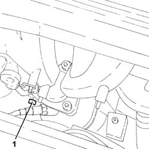
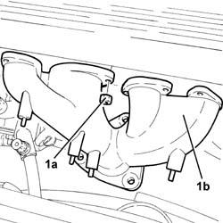
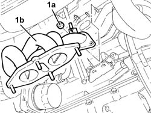

1072C12 exhaust manifold - r r
- Path
- Procedures > 10 ENGINE > 1072 INLET AND EXHAUST MANIFOLDS > 1072C exhaust manifolds > 1072C12 exhaust manifold - r r
- Kind
- repair procedure (removal / refitting; the operation number is the code)
- Applies to
- engines: 1.6 TS, 2.0 TS; all production periods
- Interactive page
- https://sloeber94.github.io/elrnDB-a147/en/#/3024854
Applies to: engines: 1.6 TS; all production periods; only with equipment: 103 CV
 Removing
Removing
 Refitting
RefittingPosition the vehicle on the ramp.
Ensure that the ignition key is in the OFF postition, then disconnect the battery negative terminal.
 | Name | Connector |
|---|---|---|
- | Battery |
Proceed with the removal 1072C44 exhaust manifold heat shield on bulkhead - r+r .
1. Undo the nut securing the engine oil dipstick to the exhaust manifold.

Applies to: engines: 1.6 TS; all production periods; only with equipment: 103 CV
Proceed with the removal 1080B62 catalytic converter - r + r .
1. Undo the nuts (1a) and remove the exhaust manifold (1b) releasingi t from the studs on the cylinder head.

Applies to: engines: 1.6 TS; all production periods; only with equipment: 103 CV
Refitting
RemovingPlace the exhaust manifold back in its housing and fix it tightening the nuts to the recommended torque.
 | Fastening | Component | Ø | Value (daNm) |
|---|---|---|---|---|
- | Nut | EXHAUST MANIFOLD/S | M8 | (Cylinder head side) 2.3 ÷ 2.8 |
Proceed with the refitting 1080B62 catalytic converter - r + r .
Tighten the nut securing the tube for the oil dipstick to the exhaust manifold.
Proceed with the refitting 1072C44 exhaust manifold heat shield on bulkhead - r+r .
Connect the battery terminal (-).
Remove the car from the ramp.
Applies to: engines: 1.6 TS; all production periods; only with equipment: 120 CV
Removing
RefittingPosition the vehicle on the ramp.
Ensure that the ignition key is in the OFF postition, then disconnect the battery negative terminal.
| Name | Connector |
|---|---|---|
- | Battery |
Proceed with the removal 1072C44 exhaust manifold heat shield on bulkhead - r+r .
Proceed with the removal 1080B40 catalytic pre-converter - r r .
1. Undo the nuts (1a) and remove the exhaust manifold (1b) releasingi t from the studs on the cylinder head.

Applies to: engines: 1.6 TS; all production periods; only with equipment: 120 CV
Refitting
RemovingPlace the exhaust manifold back in its housing and fix it tightening the nuts to the recommended torque.
| Fastening | Component | Ø | Value (daNm) |
|---|---|---|---|---|
- | Nut | EXHAUST MANIFOLD/S | M8 | (Cylinder head side) 2.3 ÷ 2.8 |
Proceed with the refitting 1080B40 catalytic pre-converter - r r .
Proceed with the refitting 1072C44 exhaust manifold heat shield on bulkhead - r+r .
Connect the battery terminal (-).
Remove the car from the ramp.
Applies to: engines: 2.0 TS; all production periods
Removing
RefittingPosition the vehicle on the ramp.
Ensure that the ignition key is in the OFF postition, then disconnect the battery negative terminal.
| Name | Connector |
|---|---|---|
- | Battery |
Drain the air conditioner refrigerant system 5040A10 Air conditioning refrigerant CIRCUIT - Draining and Refilling .
Proceed with the removal 4450B10 Front WHEEL (one) - R.R. (Right side).
Proceed with the removal 7055B54 under-engine guard - r r .
Proceed with the removal 7055B64 Engine compartment DUST shield in front wheel arch (one), left or right - R.R. (Right side).
Proceed with the removal 1072C44 exhaust manifold heat shield on bulkhead - r+r .
Proceed with the removal 1080B40 catalytic pre-converter - r r .
Proceed with the removal 1092G10 single engine belt r r .
Proceed with the removal 5040A20 air conditioner compressor - r+r - includes fluid level check and top up if necessary .
Proceed with the removal 5040A26 compressor mount - r r .
1. Undo the nuts (1a) and remove the exhaust manifold (1b).

Applies to: engines: 2.0 TS; all production periods
Refitting
RemovingPlace the exhaust manifold back in its housing and fix it tightening the nuts to the recommended torque.
| Fastening | Component | Ø | Value (daNm) |
|---|---|---|---|---|
- | Nut | EXHAUST MANIFOLD/S | M8 | (Cylinder head side) 2.3 ÷ 2.8 |
Proceed with the refitting 5040A26 compressor mount - r r .
Proceed with the refitting 5040A20 air conditioner compressor - r+r - includes fluid level check and top up if necessary .
Proceed with the refitting 1092G10 single engine belt r r .
Proceed with the refitting 1080B40 catalytic pre-converter - r r .
Proceed with the refitting 1072C44 exhaust manifold heat shield on bulkhead - r+r .
Proceed with the refitting 7055B64 Engine compartment DUST shield in front wheel arch (one), left or right - R.R. (Right side).
Proceed with the refitting 7055B54 under-engine guard - r r .
Proceed with the refitting 4450B10 Front WHEEL (one) - R.R. (Right side).
Refill the air conditioner refrigerant system 5040A10 Air conditioning refrigerant CIRCUIT - Draining and Refilling .
Connect the battery terminal (-).
Remove the car from the ramp.
Topics linked from this page (11)
- 1072C44 exhaust manifold heat shield on bulkhead - r+r
- 1080B40 catalytic pre-converter - r r
- 1080B62 catalytic converter - r + r
- 1092G10 single engine belt r r
- 4450B10 Front WHEEL (one) - R.R.
- 5040A10 Air conditioning refrigerant CIRCUIT - Draining and Refilling
- 5040A20 air conditioner compressor - r+r - includes fluid level check and top up if necessary
- 5040A26 compressor mount - r r
- 7055B54 under-engine guard - r r
- 7055B64 Engine compartment DUST shield in front wheel arch (one), left or right - R.R.
- A1B Battery ( Connectors )